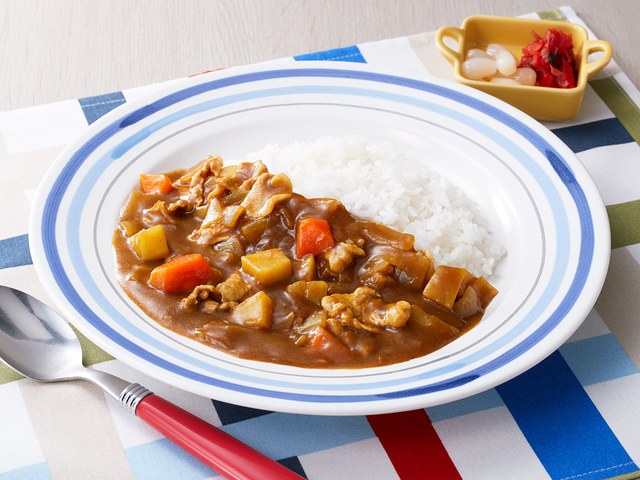
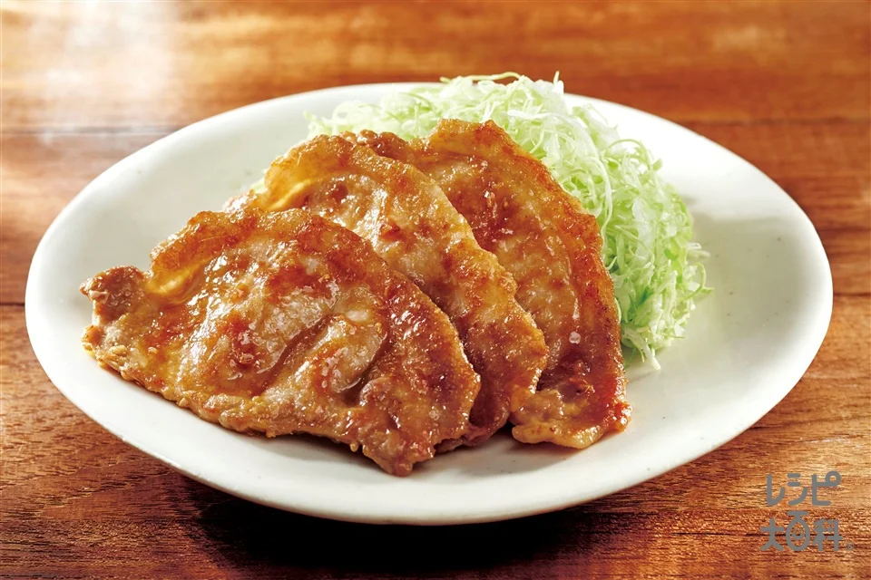

カリッとジューシーからあげ
調理時間約50分
材料【2人分】
- 鶏もも肉
- 1枚(300g)
- 片栗粉
- 大さじ3
- 薄力粉
- 大さじ3
- サラダ油
- 適量
- レモン
- 1/4個
☆たれ
- しょうゆ
- 大さじ1
- 酒
- 大さじ1
- おろししょうが
- 小さじ1/2
- おろしにんにく
- 小さじ1/2
つくりかた
- 1. レモン2等分の放射状に切る。
- 2. ボウルに☆を入れて混ぜ、鶏肉を加えてもみこむ。冷蔵庫で30分置く
- 3. 2に片栗粉、薄力粉を加えて混ぜる
- 4. 鍋の底から2cm程度のサラダ油を入れて170℃に熱し、鶏肉を入れて火が通るまで中火で4～5分揚げる。器に唐揚げを盛り、レモンを添える。
豚の旨味 ポークカレー
調理時間約50分
材料【2人分】
- ごはん
- お茶碗2杯(300g)
- 豚こま切れ肉
- 150g
- 玉ねぎ
- 1/2個
- にんじん
- 1/2本
- じゃがいも
- 1個(150g)
- おろしにんにく
- 小さじ1/2
- サラダ油
- 小さじ2
- 水
- 400㏄
☆調味料
- ウスターソース
- 大さじ1
- ケチャップ
- 大さじ1
- 市販のカレールウ
- ３かけ(表示分量)
つくりかた
- 1. 玉ねぎは食べやすい大きさに切る。にんじんは縦半分に切り、切り口を下にして5mm幅に切る。じゃがいもは食べやすい大きさに切り、水にさらして水気を切る。
- 2. 鍋にサラダ油を入れて熱し、豚肉、おろしにんにくを入れて中火で肉の色が変わるまで炒める
- 3. 玉ねぎ、にんじん、じゃがいもを加えて油が回るまで炒める。水を加えて煮立ったらふたをし、じゃがいもがやわらかくなるまで弱火で15分煮る。
- 4. 火を止めて☆を加え、カレールウが溶けるまで混ぜる。再び弱火で熱し、とろみがつくまで混ぜながら5分程煮る。
定食屋さんの味！豚のしょうが焼き
調理時間約30分
材料【2人分】
- 豚ロース肉(しょうが焼き用)
- 250g
- 塩こしょう
- 少々
- 酒
- 大さじ1
- 片栗粉
- 適量
- サラダ油
- 大さじ1
- おろししょうが
- 大さじ2
- しょうゆ
- 大さじ2
- みりん
- 大さじ2
- 砂糖
- 小さじ2
つくりかた
- 1. 豚肉は脂身と赤身の間に数か所の切り込みを入れる。塩こしょう、酒をふり、片栗粉をまぶす。
- 2. フライパンにサラダ油を入れて熱し、豚肉を入れて中火で焼く。
- 3. 豚肉の色が変わったらおろししょうが、しょうゆ、みりん、砂糖を加えて汁気がなくなるまで煮からめる。